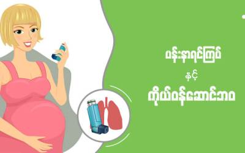
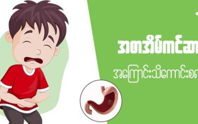

လူဖတ်များသော ကျန်းမာရေး ဆောင်းပါးများ
ကလေးတွေအန်နေရင် ဘာလုပ်ရမလဲ?

ပန်းနာရင်ကြပ်နှင့် ကိုယ်ဝန်ဆောင်ဘဝ

အစာအိမ်ကင်ဆာအကြောင်း သိကောင်းစရာ
လသားကလေးငယ်လေးတွေရှိတဲ့ ဖေဖေ မေမေ တို.မှာ ညဘက်ကလေးငိုနေလို. စိတ်ပူပင်သောကရောက်ရတာမျိုး ကြုံဖူးကြမယ်ထင်ပါတယ်။
Down Syndrome ဆိုတာဘာလဲ ?
ကလေးဘဝ ပန်းနာရင်ကြပ်မှ ကာကွယ်ဖို့